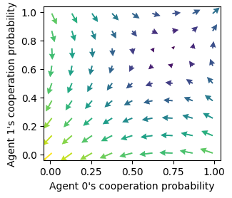
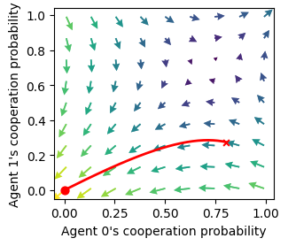
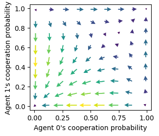
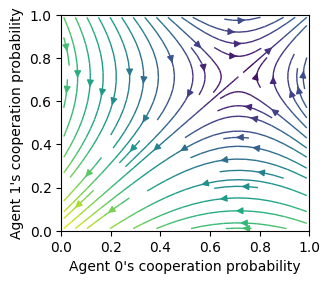
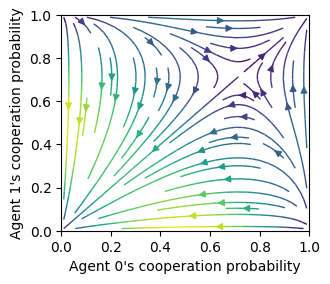
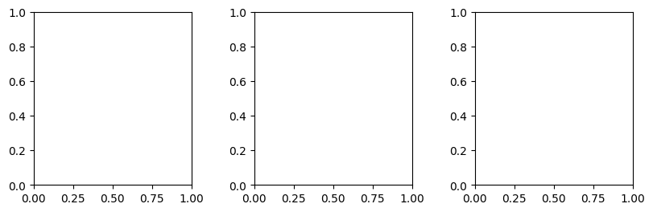

from pyCRLD.Agents.StrategyActorCritic import stratAC
from pyCRLD.Environments.SocialDilemma import SocialDilemma
from pyCRLD.Utils import FlowPlot as fp
import numpy as np
np.random.seed(0)FlowPlot
Create beautiful plots of the CRLD flow in phase space
Examples
env = SocialDilemma(R=1.0, T=0.8, S=-0.5, P=0.0)
mae = stratAC(env=env, learning_rates=0.1, discount_factors=0.9)
x = ([0], [0], [0])
y = ([1], [0], [0])
flowarrow_points = np.linspace(0.01 ,0.99, 9)
standards = [mae, x, y, flowarrow_points]Standard quiver flowplot
showing reward-predition error arrows
ax = fp.plot_strategy_flow(*standards)
ax[0].set_xlabel("Agent 0's cooperation probability")
ax[0].set_ylabel("Agent 1's cooperation probability");
Standard quiver flowplot with trajectory
ax = fp.plot_strategy_flow(*standards)
ax[0].set_xlabel("Agent 0's cooperation probability")
ax[0].set_ylabel("Agent 1's cooperation probability")
X = mae.random_softmax_strategy()
trj, fpr = mae.trajectory(X, Tmax=1000, tolerance=1e-6)
print("Trajectory length:", len(trj))
fp.plot_trajectories([trj], x, y, fprs=[fpr], axes=ax);Trajectory length: 287
Quiver plot with strategy differences
Notices how the edges of the phase space differ compared to the plots with reward-prediction errors above.
ax = fp.plot_strategy_flow(*standards, use_RPEarrows=False)
ax[0].set_xlabel("Agent 0's cooperation probability")
ax[0].set_ylabel("Agent 1's cooperation probability");
Streamplot w RPE
with reward-prediciton errors
ax = fp.plot_strategy_flow(*standards, kind="streamplot")
ax[0].set_xlabel("Agent 0's cooperation probability")
ax[0].set_ylabel("Agent 1's cooperation probability");
ax[0].set_xlim(0, 1); ax[0].set_ylim(0, 1);
Streamplot w dX
with strategy differences
ax = fp.plot_strategy_flow(*standards, kind="streamplot", use_RPEarrows=False)
ax[0].set_xlabel("Agent 0's cooperation probability")
ax[0].set_ylabel("Agent 1's cooperation probability");
ax[0].set_xlim(0, 1); ax[0].set_ylim(0, 1);
Core methods
plot_strategy_flow
plot_strategy_flow (mae, x:tuple, y:tuple, flowarrow_points, NrRandom:int=3, use_RPEarrows=True, col:str='LEN', cmap='viridis', kind='quiver+samples', sf=0.5, lw=1.0, dens=0.75, acts=None, conds=None, axes:Iterable=None, verbose=False)
Create a flow plot in strategy space.
| Type | Default | Details | |
|---|---|---|---|
| mae | CRLD multi-agent environment object | ||
| x | tuple | which phase space axes to plot along x axes | |
| y | tuple | which phase space axes to plot along y axes | |
| flowarrow_points | specify range & resolution of flow arrows | ||
| NrRandom | int | 3 | how many random (in the other dimensions) stratgies for averaging |
| use_RPEarrows | bool | True | Use reward-prediction error arrows?, otherwise use strategy differences |
| col | str | LEN | color indicates either strength of flow via colormap, otherwise a fixed color name |
| cmap | str | viridis | Colormap |
| kind | str | quiver+samples | Kind of plot: “streamplot”, “quiver+samples”, “quiver”, … |
| sf | float | 0.5 | Scale factor for quiver arrows |
| lw | float | 1.0 | Line width for streamplot |
| dens | float | 0.75 | Density for streamplot |
| acts | NoneType | None | Action descriptions |
| conds | NoneType | None | Conditions descriptions |
| axes | Iterable | None | Axes to plot into |
| verbose | bool | False | shall I talk to you while working? |
plot_trajectories
plot_trajectories (Xtrajs:Iterable, x:tuple, y:tuple, cols:Iterable=['r'], alphas:Iterable=[1.0], lss:Iterable=['-'], lws:Iterable=[2], mss:Iterable=[None], msss:Iterable=[0], fprs:Union[Iterable,bool]=None, plot_startmarker:bool=True, axes:Iterable=None, submean:bool=False)
Plot multiple trajectories in phase space.
| Type | Default | Details | |
|---|---|---|---|
| Xtrajs | Iterable | Iterable of phase space trajectories | |
| x | tuple | which phase space axes to plot along x axes | |
| y | tuple | which phase space axes to plot along y axes | |
| cols | Iterable | [‘r’] | Colors to iterate through |
| alphas | Iterable | [1.0] | Alpha values to iterate through |
| lss | Iterable | [‘-’] | Linestyles to iterate through |
| lws | Iterable | [2] | Linewidths to iterate through |
| mss | Iterable | [None] | Endmarkers to iterate through |
| msss | Iterable | [0] | Endmarker sizes to iterate through |
| fprs | Union | None | Iteralbe indicating which trajectories reached a fixed point |
| plot_startmarker | bool | True | plot a marker at the initial condition |
| axes | Iterable | None | Axes to plot into |
| submean | bool | False |
Helpers
_checks_and_balances
_checks_and_balances (x:tuple, y:tuple)
Check the format of the x and y parameter.
| Type | Details | |
|---|---|---|
| x | tuple | which phase space axes to plot along x axes |
| y | tuple | which phase space axes to plot along y axes |
| Returns | tuple | (lengths for each dimension, index of dimension to iter, length of iter) |
Let’s say we want to plot the probability of cooperation of the 0th agent on the \(x\) axis and of the 1st agent on the \(y\) axis for states 2,3 and 5, we specify (assuming the cooperation is the 0th action)
x = ([0], [2,3,5], [0])
y = ([1], [2,3,5], [0])
_checks_and_balances(x, y)(array([1, 3, 1]), 1, 3)_prepare_axes
_prepare_axes (axes:Iterable, xlens:tuple)
Check whether axes have been provided correctly. If axes haven’t been provided, provide them.
| Type | Details | |
|---|---|---|
| axes | Iterable | Axes to plot into |
| xlens | tuple | Lengths for each dimension of x and y |
| Returns | Iterable | of matplotlib axes |
_prepare_axes(None, [1,3,1])array([<Axes: >, <Axes: >, <Axes: >], dtype=object)
_dXisa_s
_dXisa_s (Xisa_s:Iterable, mae)
Compute Xisa(t-1)-Xisa(t) for all Xisa_s.
| Type | Details | |
|---|---|---|
| Xisa_s | Iterable | of joint strategies Xisa |
| mae | CRLD multi-agent environment object | |
| Returns | ndarray | joint strategy differences |
from pyCRLD.Agents.StrategyActorCritic import stratAC
from pyCRLD.Environments.SocialDilemma import SocialDilemmaenv = SocialDilemma(R=1.0, T=0.8, S=-0.5, P=0.0)
mae = stratAC(env=env, learning_rates=0.1, discount_factors=0.9)
Xisa_s = [mae.random_softmax_strategy() for _ in range(7)]
_dXisa_s(Xisa_s, mae).shape(7, 2, 1, 2)_dTDerror_s
_dTDerror_s (Xisa_s:Iterable, mae)
Compute reward-prediction errors TDerror_s for Xs.
| Type | Details | |
|---|---|---|
| Xisa_s | Iterable | of joint strategies Xisa |
| mae | CRLD multi-agent environment object | |
| Returns | ndarray | joint reward-prediction errors |
env = SocialDilemma(R=1.0, T=0.8, S=-0.5, P=0.0)
mae = stratAC(env=env, learning_rates=0.1, discount_factors=0.9)
Xisa_s = [mae.random_softmax_strategy() for _ in range(7)]
_dTDerror_s(Xisa_s, mae).shape(7, 2, 1, 2)_strategies
_strategies (mae, xinds:tuple, yinds:tuple, xval:float, yval:float, NrRandom)
Creates strategies (as a particular type of phase space item) for one ax plot point. All strategies have value xval at the xinds index and value yval at the yinds.
| Type | Details | |
|---|---|---|
| mae | CRLD multi-agent environment object | |
| xinds | tuple | of indices of the phase space item to plot along the x axis |
| yinds | tuple | of indices of the phase space item to plot along the y axis |
| xval | float | the value of the phase space item to plot along the x axis |
| yval | float | the value of the phase space item to plot along the y axis |
| NrRandom | how many random (in the other dimensions) stratgies for averaging | |
| Returns | ndarray | Array of joint strategies |
For example, given
env = SocialDilemma(R=1.0, T=0.8, S=-0.5, P=0.0)
mae = stratAC(env=env, learning_rates=0.1, discount_factors=0.9)the following parameters give
xinds = (0, 0, 0) # Plot agent 0's state-action item 0, 0
yinds = (1, 0, 0) # Plot agent 1's state-action item 0, 0
NrRandom = 3
strats = _strategies(mae, xinds, yinds, xval=0.2, yval=0.4, NrRandom=NrRandom)
assert strats.shape[0] == NrRandom
strats.shape(3, 2, 1, 2)The first dimension of the _strategies return holds the randomization in the other dimensions than given by xinds and yinds. Note that the randomization in the other dimensions makes no sense in a stateless normal-form game since there are no other dimensions.
_data_to_plot
_data_to_plot (mae, flowarrow_points:Iterable, xinds:tuple, yinds:tuple, NrRandom:int, difffunc:collections.abc.Callable, phasespace_items:collections.abc.Callable, verbose=False)
| Type | Default | Details | |
|---|---|---|---|
| mae | CRLD multi-agent environment object | ||
| flowarrow_points | Iterable | range & resolution of flow arrows | |
| xinds | tuple | of indices of the phase space object to plot along the x axis | |
| yinds | tuple | of indices of the phase space object to plot along the y axis | |
| NrRandom | int | how many random (in the other dimensions) stratgies for averaging | |
| difffunc | Callable | to compute which kind of arrows to plot (RPE or dX) | |
| phasespace_items | Callable | to obtain phase space items for one ax plot point | |
| verbose | bool | False | shall I talk to you while working? |
| Returns | tuple | meshgrid for (X, Y, dX, dY) |
For example, given
env = SocialDilemma(R=1.0, T=0.8, S=-0.5, P=0.0)
mae = stratAC(env=env, learning_rates=0.1, discount_factors=0.9)the following parameters give
xinds = (0, 0, 0) # Plot agent 0's state-action item 0, 0
yinds = (1, 0, 0) # Plot agent 1's state-action item 0, 0
flowarrow_points = np.array([0.1, 0.3, 0.5, 0.7, 0.9])
NrRandom=7
difffunc = _dTDerror_s
phasespace_items = _strategies
verbose = True
X, Y, dX, dY = _data_to_plot(mae, flowarrow_points, xinds, yinds, NrRandom, difffunc,
phasespace_items=_strategies, verbose=verbose)
assert X.shape == Y.shape; print("\nShape of `X` and `Y`:", X.shape)
assert dX.shape == dY.shape; print("Shape of `dX` and `dY`:", dX.shape)
assert dX.shape[-1] == NrRandom [plot] generating data 96 %
Shape of `X` and `Y`: (5, 5)
Shape of `dX` and `dY`: (5, 5, 7)Let \(l\) be the number of the flowarrow_points, than X and Y have shape of (\(l\), \(l\)). dX and dY have shape of (\(l\), \(l\), Number of randomizations).
_plot
_plot (dX:numpy.ndarray, dY:numpy.ndarray, X:numpy.ndarray, Y:numpy.ndarray, ax=None, sf=1.0, col='LEN', cmap='viridis', kind='quiver+samples', lw=1.0, dens=0.75)
Plots the flow for one condition into one axes
| Type | Default | Details | |
|---|---|---|---|
| dX | ndarray | differences in x dimension | |
| dY | ndarray | differences in y dimension | |
| X | ndarray | meshgrid in x dimension | |
| Y | ndarray | meshgrid in y dimension | |
| ax | NoneType | None | Individual axis to plot into |
| sf | float | 1.0 | Scale factor for quiver arrows |
| col | str | LEN | what should the color indicatie |
| cmap | str | viridis | Colormap |
| kind | str | quiver+samples | Kind of plot: “quiver”, “quiver+samples”, “quiver”, … |
| lw | float | 1.0 | Line width |
| dens | float | 0.75 | Density |
_scale
_scale (x:float, y:float, a:float)
Scales length of the (x, y) vector accoring to length to the power of a.
| Type | Details | |
|---|---|---|
| x | float | x dimension |
| y | float | y dimension |
| a | float | scaling factor |
| Returns | tuple | scaled (x,y) |
A scale factor of 0 makes all vectors equally large.
_scale(4, 3, 0)(0.8, 0.6000000000000001)_scale(40, 30, 0)(0.8, 0.6)A scale factor of 1 does not change a vector’s length
_scale(4, 3, 1)(4.0, 3.0)_scale(40, 30, 1)(40.0, 30.0)